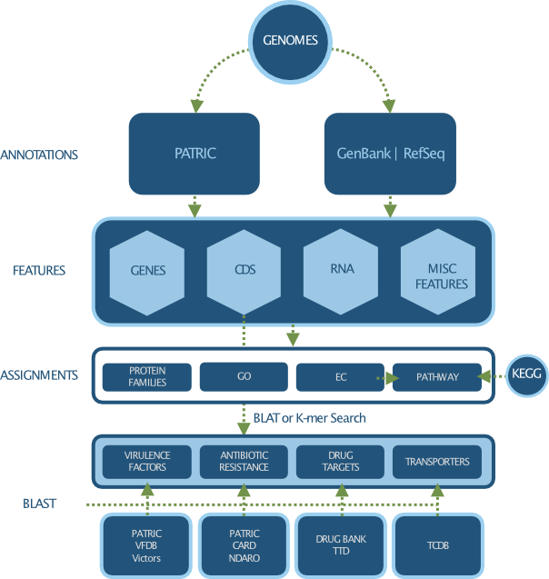

Genomic Features¶
Genomic Features are defined segments of a genome. Most often features will code for proteins or RNAs, however some correspond to pseudogenes or repeat regions. We currently support over 40 genomic feature types.
Genome Annotation¶
Genome annotation refers to the systematic analysis of a genome to identify all protein and RNA coding genes and characterize their functions. BV-BRC supports genome annotations from multiple sources, including:
Original annotations from GenBank / RefSeq
Consistent annotations across all bacterial genomes using RAST anotation pipeline
Genomic Features¶
Genomic Features refer to defined segments of a genome, which often code for proteins and RNAs. Common feature types include:
Gene
CDS
rRNA
tRNA
Misc RNA
Pseudogene
Functional Properties¶
Functional properties refer to the description and ontological terms used to characterize protein functions. Common functional properties assigned to proteins include:
Gene name
Function
GO terms
EC numbers
Protein families
Subsystems
Metabolic pathways
Specialty Genes¶
Specialty genes refer to the genes possessing properties that are of special interest to the infectious disease researchers. Classes of specialty genes include:
Antibiotic resistant genes
Virulence factors
Transporters
Essential genes
Drug and vaccine targets
Human homologs
Data Processing and Clean up¶
